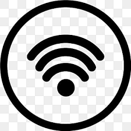

Keamanan Jaringan (Network Security)

Keamanan jaringan adalah perlindungan data dan sistem dari akses tidak sah atau ancaman di dalam jaringan, seperti WiFi dan internet.
Tips Mengamankan WiFi:
- Gunakan password WiFi yang kuat dan unik.
- Aktifkan enkripsi WPA3 atau minimal WPA2 di router Anda.
- Ganti nama SSID default untuk menyulitkan penyerang.
- Update firmware router secara berkala.
- Nonaktifkan WPSjika tidak digunakan
Apa itu Enkripsi?
Enkripsi adalah proses mengubah data menjadi kode untuk mencegah akses tidak sah. Ini membantu menjaga kerahasiaan data yang dikirim melalui jaringan, seperti saat Anda berbelanja online atau mengakses bank digital.
Contoh Enkripsi yang Umum Digunakan:
- HTTPS untuk melindungi komunikasi web.
- VPN untuk mengamankan koneksi internet pribadi.
- WPA2/WPA3 untuk mengamankan koneksi WiFi.
Ingat: Melindungi jaringan berarti melindungi semua perangkat yang terhubung!
Kembali ke halaman utama